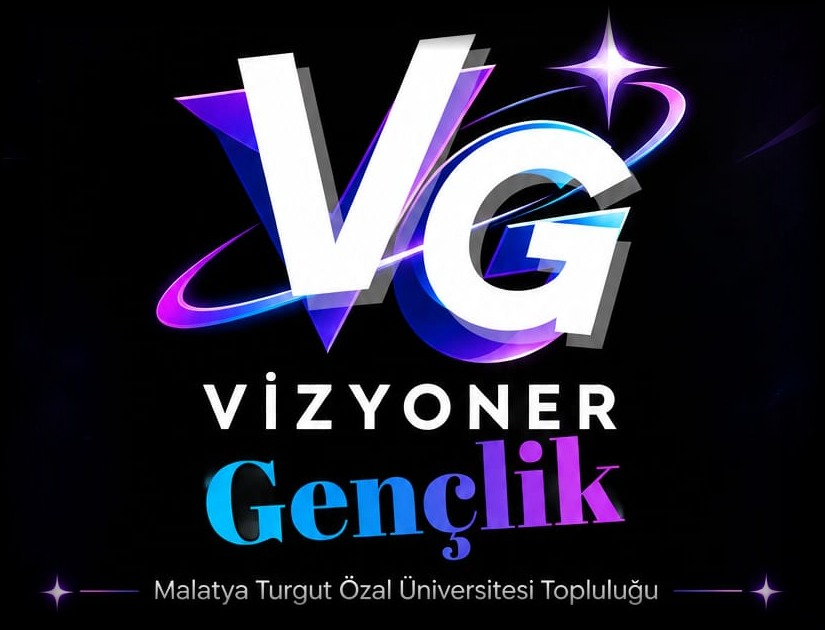

Akademik gelişim, sosyal etkileşim
Hayallerine Birlikte Ulaşalım
Akademik, profesyonel ve sosyal gelişimi bir arada ele alıyor; teknoloji ve iş dünyasını genç zihinlerle buluşturuyoruz.

- Bilişim
- Kariyer
- Akademi
- Sosyal gelişim
- Etkinlik ve daha fazlası
Amacımız
En aktif, kapsayıcı ve öncü öğrenci yaşam topluluğu olmak.
Malatya Turgut Özal Üniversitesi bünyesinde, öğrencilerin akademik, profesyonel ve sosyal gelişimini bütüncül bir yaklaşımla destekleyen; teknoloji ve iş dünyasını genç zihinlerle buluşturan; yenilikçi projeleri, yarışmaları ve imza etkinlikleriyle (ör. VizyonFest) örnek gösterilen en aktif, kapsayıcı ve öncü öğrenci yaşam topluluğu olmak.
Üyelere katkımız
Üyelerimize sunduğumuz değer
-
Dünyayı daha iyi anlamak
İş dünyasındaki dönüşümleri, yeni sektörleri, meslekleri ve ortaya çıkan fırsatları keşfetmek.
-
Düşünme ve analiz becerilerini geliştirmek
Araştırmak, sorgulamak, verileri yorumlamak ve farklı bakış açıları kazanmak.
-
Somut yetkinlikler kazanmak
Yeni araçlar öğrenmek, projeler üretmek, sunum yapmak ve gerçek problemler üzerinde çalışmak.
-
Nitelikli bir çevre edinmek
Benzer amaçları olan gençlerle, akademisyenlerle ve farklı alanlardan profesyonellerle tanışmak.
-
Bir topluluğun parçası olmak
Sosyalleşmek, eğlenmek, dayanışma görmek ve birlikte anlamlı işler üretmek.
Temel yaklaşım
Vizyoner Gençlik’in temel yaklaşımı
Vizyoner Gençlik, gençlerin dünyayı anlamalarını, akademik ve profesyonel açıdan gelişmelerini, yeni fırsatları keşfetmelerini ve somut değer üretmelerini amaçlayan bir topluluktur.
Topluluğumuz, bireysel gelişimi ortak öğrenme ve dayanışmayla birleştirir. Her üyeye öğrenme, katkı sunma, sorumluluk alma ve liderlik geliştirme fırsatı sağlamayı hedefler.
Sürekliliğimizi kişilere değil; ortak değerlere, açık sorumluluklara, paylaşılan bilgiye ve yeni nesillere aktarılan bir gelişim kültürüne dayandırırız.
Bütüncül yapı
Vizyoner Gençlik’in bütüncül yapısı
Akademik Gelişim
Araştır · Sorgula · Analiz et · Üret
İş Dünyası
Keşfet ve anla
Yetkinlik
Öğren ve uygula
Sosyal Yaşam
Paylaş ve bağ kur
Fikir ve Proje
Geliştir ve üret
Takvimden
Sırada ne var?
Yeni etkinlikler çok yakında duyurulacak. Takipte kal.
Birlikte yaptıklarımız
Buluşma arşivi
Henüz arşivlenmiş bir buluşma yok. Etkinliklerimiz gerçekleştikçe burada paylaşılacak.
Bu aramayla eşleşen bir buluşma bulunamadı.
Bize ulaş
İletişim
Sorular, iş birlikleri ve duyurular için bize aşağıdaki kanallardan ulaşabilir, topluluğa katılabilirsin.
Bir sonraki güzel fikir sende olabilir.
Aklındaki fikri, öneriyi ya da isteği yaz. Her mesajı okuyoruz.